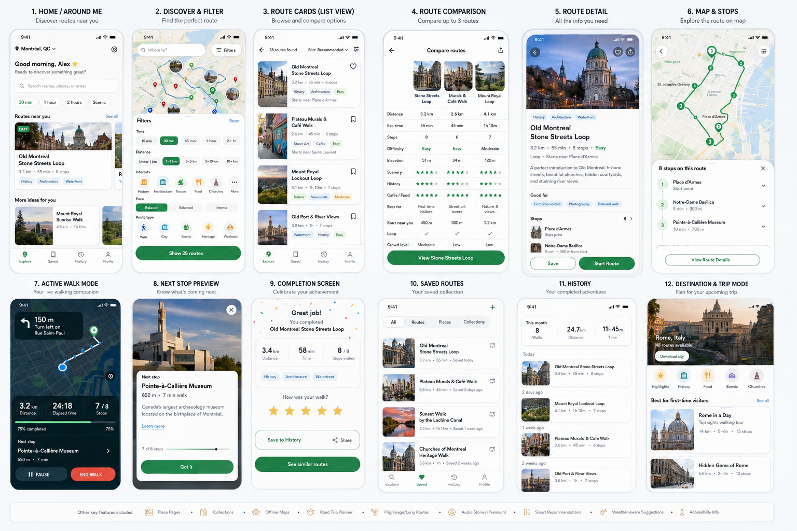

Visual mockups
Use these as visual direction, not pixel-perfect source of truth.

Core loop
Discover
Find routes around me or in a destination.
Find routes around me or in a destination.
Choose
Compare by time, distance, mood, interests, and route type.
Compare by time, distance, mood, interests, and route type.
Follow
Use active walk mode with map, progress, and next stop.
Use active walk mode with map, progress, and next stop.
Remember
Save completed routes, places visited, and history.
Save completed routes, places visited, and history.